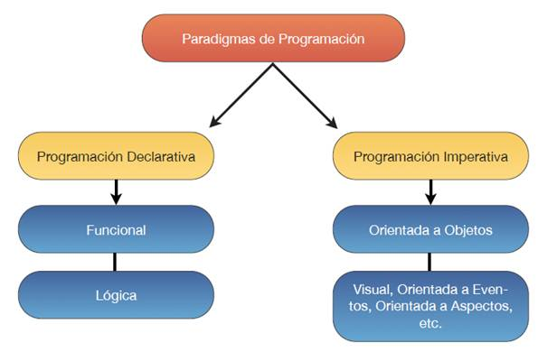

Programación de Aplicaciones Telemáticas
Tema 1: Introducción a Java en la Industria
Agenda
- Ciclo de vida del software
- Paradigmas de programación
- Sistemas distribuidos
- Ecosistema Backend
- Arquitecturas REST
- Arquitecturas Event-driven
- Arquitecturas Serverless
- Ecosistema Frontend
- Otros lenguajes
Ciclo de vida del software

Paradigmas de programación
Sistemas distribuidos
Un sistema distribuido es un sistema cuyos componentes están ubicados en diferentes computadoras en red, que se comunican y coordinan sus acciones pasándose mensajes entre sí. Los componentes interactúan entre sí para lograr un objetivo común.
Source: Wikipedia
Ecosistema Backend
¿Que es el backend?
El Backend es la parte del desarrollo web que se encarga de que toda la lógica de negocio de una aplicación web.
Ecosistema Backend
Componentes
En el desarrollo del Backend, se interacciona con los siguientes elementos:
- Bases de datos
- Caches
- Brokers de mensajeria
- Sistemas terceros REST/WS
Arquitecturas REST
REST es una arquitectura de desarrollo web que puede ser utilizada en cualquier cliente HTTP.
- Es un protocolo sin estado
- Las operaciones se definen a traves de los metodos: GET, POST, PUT, PATCH y DELETE
- Utiliza URIs
- Emplea hipermedia (HTML, XML & JSON)
Arquitectuas Event-driven
La Event-Driven Architecture (EDA, por sus siglas en inglés) es una arquitectura en la que el software ejecuta una acción al recibir una o más notificaciones de eventos.

Arquitectuas Event-driven
Componentes:
- Message broker
- Publisher/Subscriber
- Message
- Channels
Arquitecturas Serverless
Las Arquitecturas Serverless se caracterizan por la capacidad de computación efímera en infraestructura manejada por proveedores cloud tipo AWS, Azure o Google Cloud.
Ecosistema Frontend
En el desarrollo de software, el Frontend es la parte del software que interactúa con los usuarios a través del navegador web y las tecnologias web como son HTML, CSS y Javascript.
Interface de usuario web, recibe los datos del usuario y los enviará al Backend para su procesamiento.
Ecosistema Frontend
El desarrollo en Frontend tiene que tener en cuenta los siguientes conceptos:
- Interface de usuario
- Accesibilidad
- Look & Feel
- Interacción
Otros lenguajes
No todo el desarrollo se desarrolla en Java en el lado del Backend o en Javascript en el lado del cliente.
- Scala
- Kotlin
- Go
- Rust
- Typescript